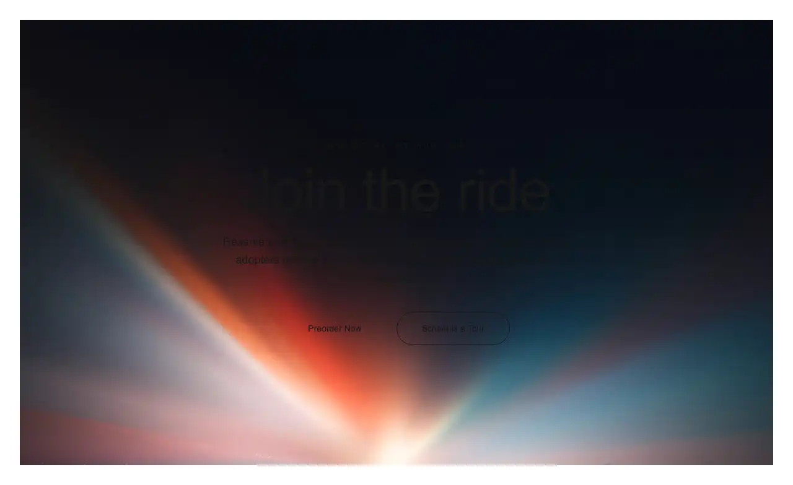

Dark, premium landing page for an electric RV brand: a full-screen video hero with liquid-glass navigation, a centered tagline, a split feature card with switchable tabs, an HLS streaming statement with a stats row, a video preorder call to action and a multi-column footer. Self-contained pure-black palette, Inter + Instrument Serif type.

Rendered on the shadcn default neutral palette with harness-generated props.
pnpm dlx shadcn@4.21.0 add @hirael/velorah
| licence | ASSET |
|---|---|
| primitive base | none |
| type | registry:block |
| files | src/components/templates/velorah/cta.tsxsrc/components/templates/velorah/feature.tsxsrc/components/templates/velorah/fonts.tssrc/components/templates/velorah/footer.tsxsrc/components/templates/velorah/hero.tsxsrc/components/templates/velorah/navbar.tsxsrc/components/templates/velorah/primitives.tsxsrc/components/templates/velorah/statement.tsxsrc/components/templates/velorah/styles.tsxsrc/components/templates/velorah/tagline.tsxsrc/components/templates/velorah/velorah.tsx |
| npm deps pulled | none beyond the pre-installed peer set |
| registry deps | button toggle-group |
| semantic / palette / hex | 48 / 8 / 2 |
| writes shared ui/ | no |